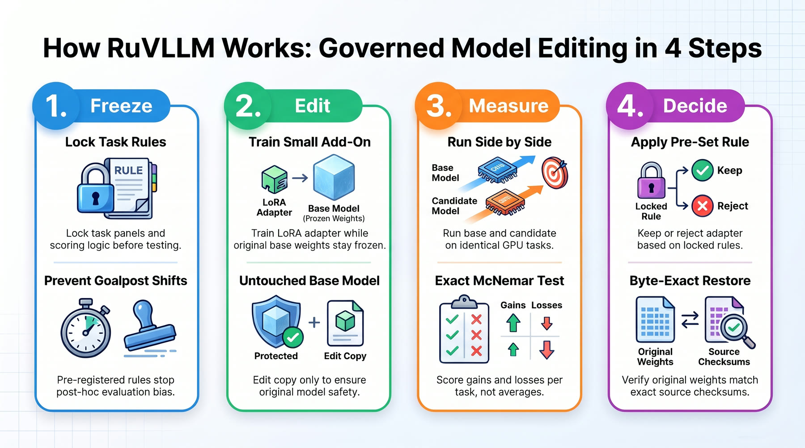

Make an AI model better at a job. Prove it worked. Keep the original.
Open AI models can be tuned for one narrow job, like using coding tools. The hard part is knowing whether the tuning really helped. RuVLLM builds a small add-on for the model. Then it tests the add-on against the untouched model on the same questions. A rule written before anyone saw the scores decides whether to keep it.
No more marking your own homework. The original model always comes back exactly as it was, and a check proves it.
An independent explainer for rUv (ruvnet)'s ruvllm — built to take you from "never seen it" to "ready to implement".

01
Getting better is easy to fake
Why is improving an AI model so easy to get wrong?
You tweak an AI model, try it a few times, and it seems smarter. Can you trust that feeling?
Imagine coaching a friend for a spelling bee. After a week, they ace the practice words you picked. Are they really better? Maybe those words were easy. Maybe they got worse at math while they practiced spelling.
Tuning an AI model has the same trap. People choose the test questions after seeing the results. They compare two averages and keep whatever looks good. It is like grading your own homework and being very pleased with the A.
A big gain in one place can quietly hide a loss somewhere else.
There is a second pain. Many people edit the model itself. If the edit turns out bad, the good original is gone, and there is no way back. Nobody enjoys that moment.
02
A safe way to improve a model, and show your work
What exactly is this thing?
RuVLLM lets you improve an open AI model without gambling on it. Think of a clothing store fitting room: try the new outfit on, and the original stays on its hanger.
It trains a small add-on. That is a tiny set of extra numbers that sits on top of the model and nudges how it behaves. The original model is never touched.
Then it runs the plain model and the model with the add-on on identical questions. Every answer is saved. Nothing is thrown away.
In the repo's own recorded runs, one add-on was kept and a second one was rejected. That is the system working as intended.
| Aspect | Detail |
|---|---|
| What changes | A copy of the model, never the original |
| How it is judged | Same questions for both versions, with a keep-or-reject rule fixed in advance |
| What you keep | Every raw answer, the scores, and a way to re-score on your own computer |
| Honest status | Measured on one open model so far. It is not approved for real-world use |
03
The clever move: write the rules before the game
What is the clever move?
Two ideas make the proof hard to fudge. Picture calling your shot in pool before you hit the ball.
First, the questions, the right answers and the keep-or-reject rule are locked before the model answers anything. Nobody can shift the goalposts after seeing a score.
Second, the old and new versions answer the very same questions. For each question, you ask who got it right. You count how many the add-on fixed and how many it broke.
The repo's own second try shows why this matters. The add-on fixed every tool mistake. But it forgot how to add, and lost 16 math answers. The locked rule said math must not get worse, so it was rejected. Nobody had to argue about it.
Call your shot before you take it, and the scoreboard cannot be talked into agreeing with you.
04
Freeze, change a copy, measure in pairs, decide
How does it work, step by step?
The workflow has four steps. Each one is checked by saved evidence.
Freeze: the model version, the task list, the answer settings and the keep rule are sealed in a bundle. The bundle gets a SHA-256 fingerprint (a short code that changes if even one character changes). Prepared tasks cover eight families of coding-tool use, with 24 cases each. Arithmetic is a separate check that the model's general skills have not slipped.
Change a copy: there are two ways. A LoRA adapter (a small add-on trained while the base model stays frozen) is the main one. The included add-on, coding-4b, has about 1.5 million trainable numbers. The other way is a direct weight edit. A Rust program changes specific values inside a copy, within a strict policy.
Measure in pairs: both versions run on the same graphics card (the chip AI models run on). Gains and losses are checked with an exact McNemar test. That test looks only at questions where the two versions disagree. On the held-out panel, coding-4b went from 149 to 176 of 192 tool passes, with 40 gains and 13 losses. Arithmetic went from 62 to 64.
Decide and restore: the frozen rule says keep or reject. The Rust engine then proves the original comes back by matching fingerprints. Rented graphics cards run under four spending limits and a separate self-destruct timer, so a forgotten rental cannot eat your wallet. Recorded runs cost between $0.27 and $0.91 each. A job counts as done only when a re-score on your own machine matches.
05
What you would do with it
How would I actually use it?
Three jobs a real person might hand this project.
1 Make a small open model better at one job Primary use
Say you want a small model that uses coding tools more reliably. You train an add-on, run the paired comparison, and read the result. You see gains, losses and failures broken down by tool family.
You get a keep-or-reject answer you can defend. The repo's recorded run kept coding-4b, going from 123 to 173 of 192 tool passes with no losses on that panel. That is a rare thing: a before-and-after you can actually trust.
2 Check someone else's claim Verify
The repo ships 462 saved answers from two experiments. You can re-check them on your own laptop. No graphics card, network or account is needed. You get to play detective without leaving your desk.
The repo is clear about limits. These files do not prove best-in-the-world performance or safety. They do not authorize putting a model into real use.
3 Try a risky edit without fear Experiment
Think of a save point in a video game. You can let the Rust editor change specific values in a copy of a model. It records evidence and proves the original restores exactly. If the edit is bad, you just reload and lose nothing.
06
Start by checking the evidence yourself
What do I type first, and what will I see?
This repo has no one-line install command. It is a workbench you clone, not a package you add. The safest first step needs no graphics card, no downloads and no accounts. Nothing can break, because the check only reads files.
git clone https://github.com/ruvnet/ruvllm && cd ruvllm && python3 scripts/verify_benchmarks.py- Check prerequisites. You need git and Python 3.11 or newer. The verifier uses only Python's built-in tools. For the Rust steps, you also need Rust installed. The repo pins its own toolchain version.
- Run the verifier from the repo root. Use the install command above. It only reads files and changes nothing. It checks the exact file list and the fingerprints, and it re-scores the math answers.
- Look for the green light. The report should show verified: true and generations_verified: 462. It should also show math_text_independently_rescored: true and generated_code_reexecuted: false. Seeing those lines means you just audited 462 saved answers yourself.
- Run the tests. Run python3 -B -m unittest discover -s benchmarks/tests -v. The tests work on temporary copies, so your files stay clean. Run python3 scripts/check_repository.py to check the repo's own layout.
- Optional: build the model editor. Go into the native/ folder. Run cargo build --locked --release --bin weight_evolution, then cargo test --locked -p ruvllm-weight-evolution --lib. You end up with a built editor and passing Rust tests.
- What you have now. You have personally confirmed the saved results. You also have a working copy of the repo, and optionally the built editor.
- Next step. To run your own comparison, read the paired-measurement guide in experiments/model-improvement. It starts with python3 experiments/model-improvement/prepare.py --out followed by a new absolute folder path, which freezes the 256 tasks. Running it for real needs a rented graphics card, so set a spending cap first.
07
Take the map with you
Where can I take the whole map with me?
The knowledge pack holds the indexed passages from this repo: its readme, protocols and evidence notes. Load it into your own tools and ask questions offline.